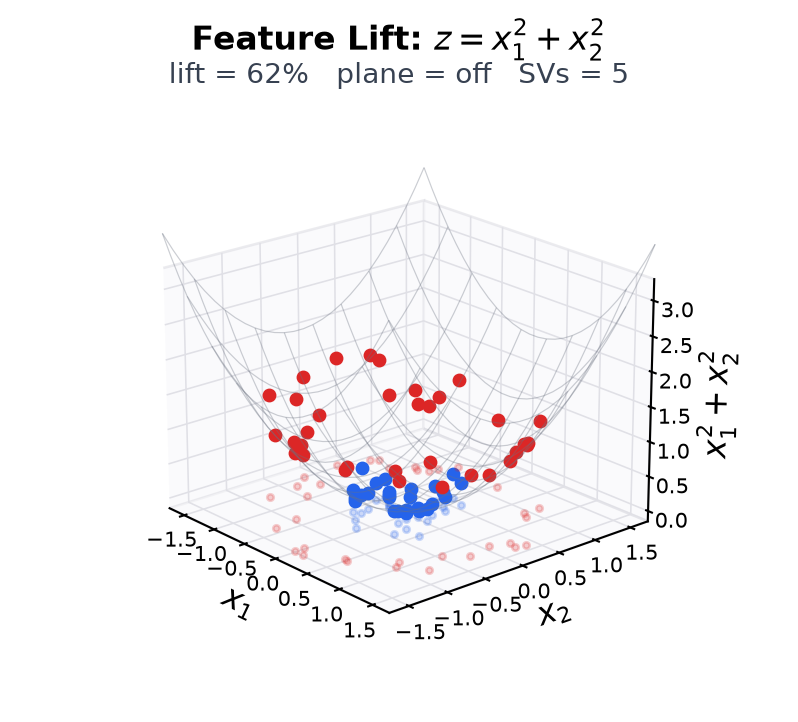
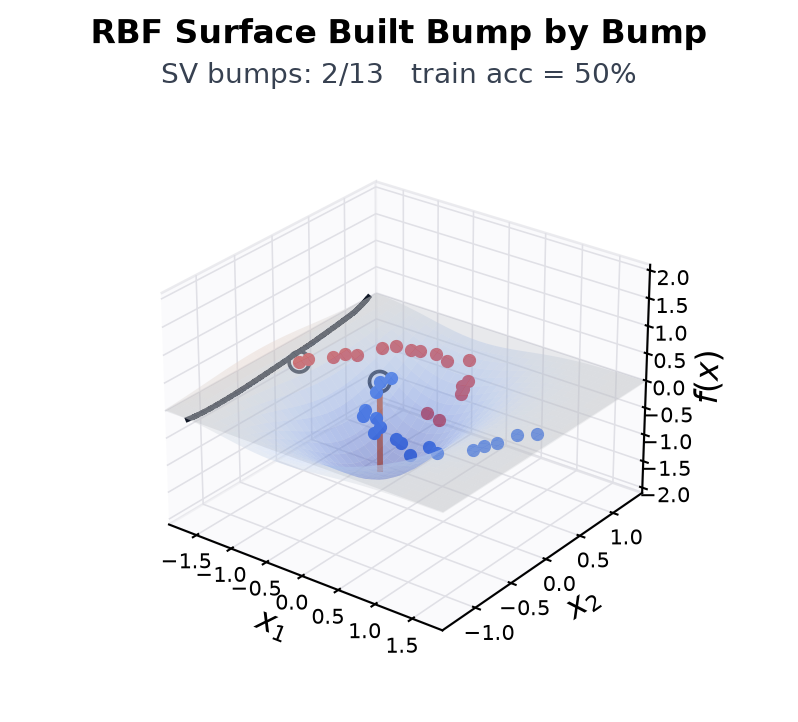
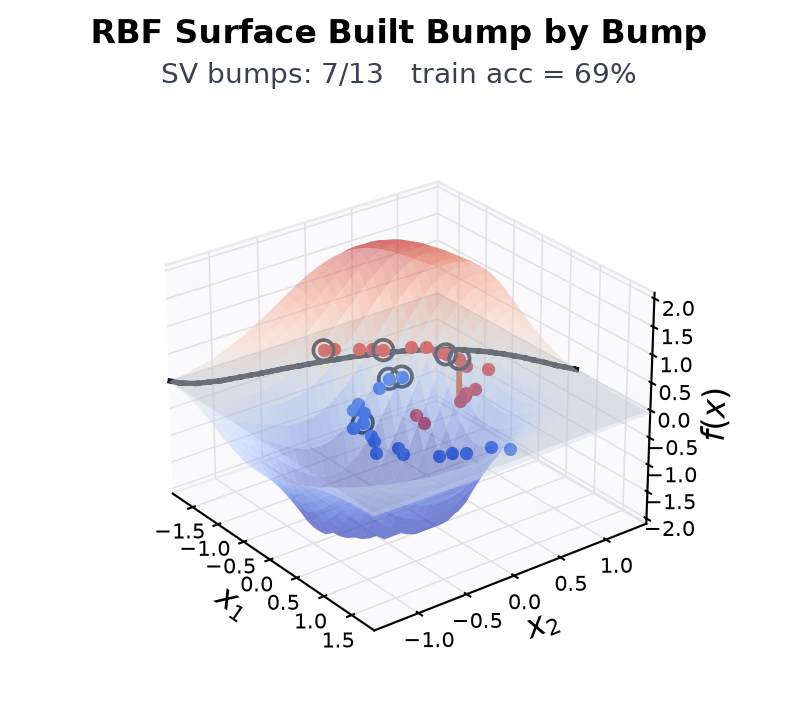
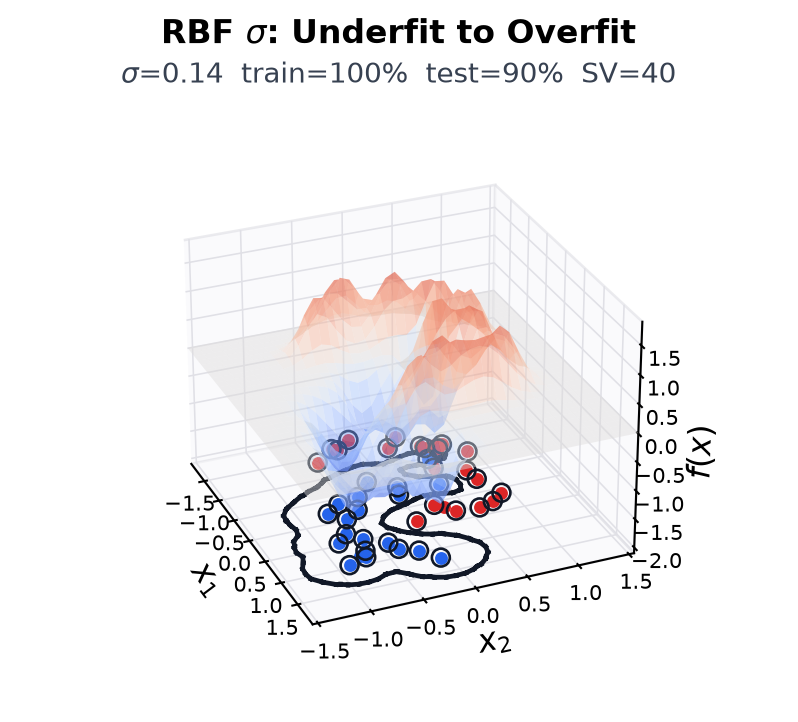
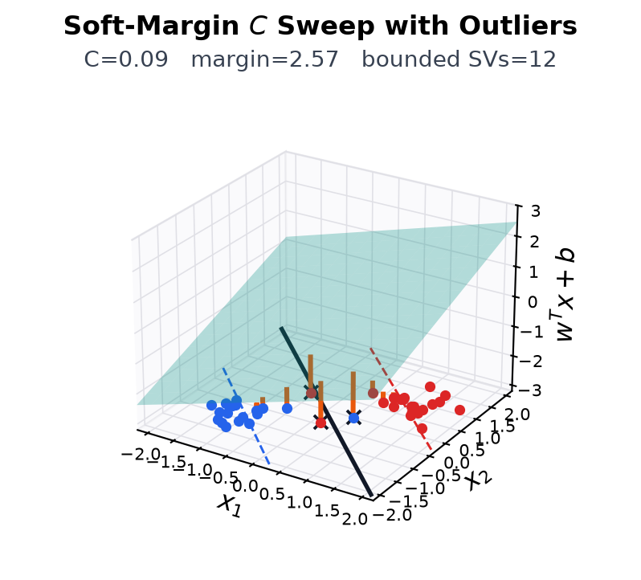
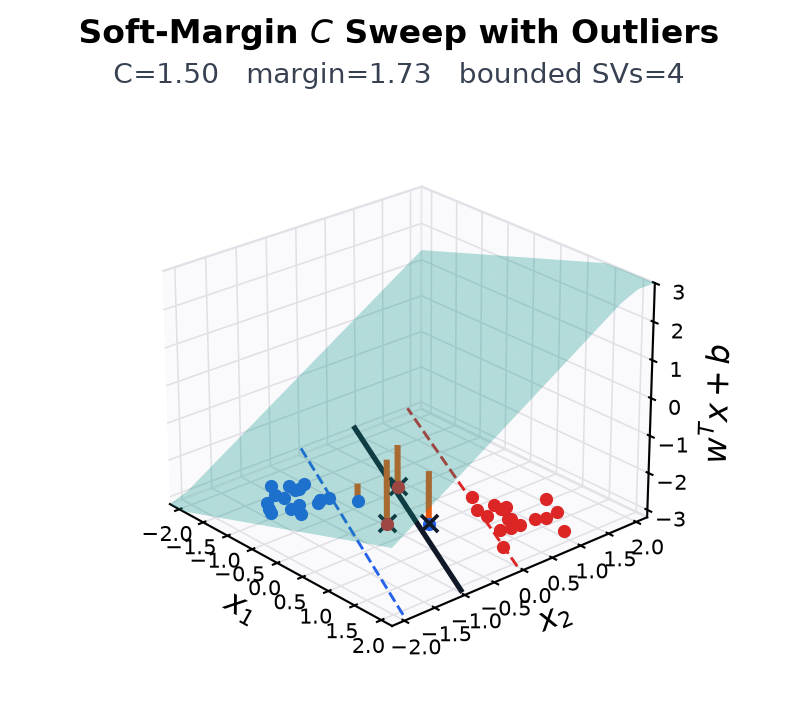
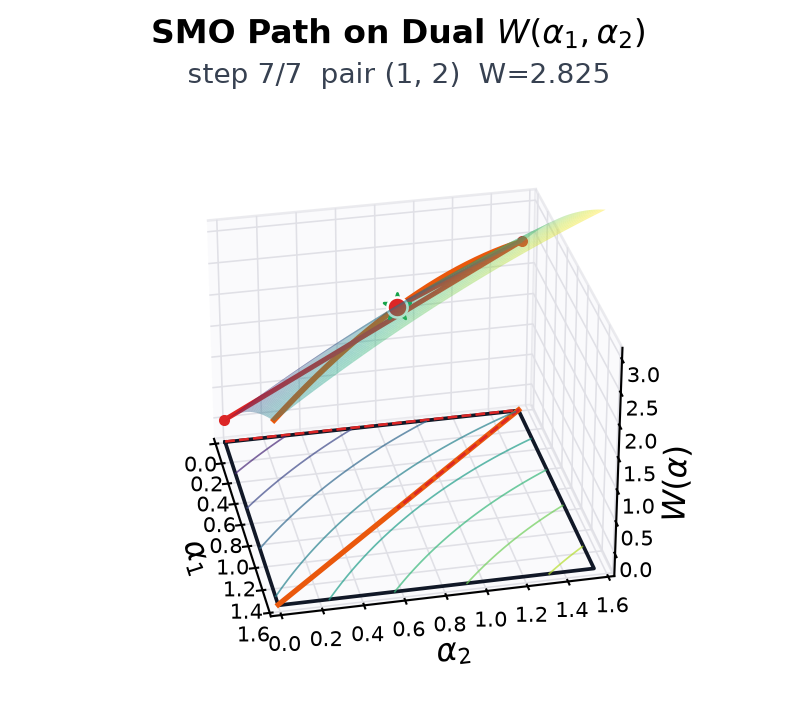

Support Vector Machines: Dual, Kernels और Soft Margin
Theory
इस lecture में: Optimal margin classifier का dual problem, inner products के ज़रिए prediction, feature maps और kernel trick (\((x^T z)^2\) का उदाहरण, polynomial और Gaussian/RBF kernels), Mercer's theorem, outliers और non-separable data के लिए soft-margin SVM (slack variables, \(C\), box constraint और KKT cases), और SMO algorithm।
1. एक line में idea
पिछले lecture में हमने optimal margin classifier का Lagrangian लिखा था। इस lecture में जब हम उसका dual problem निकालते हैं, तो एक कमाल की बात सामने आती है: पूरे optimization और prediction में training points \(x^{(i)}\) कभी अकेले नहीं आते, वे सिर्फ़ आपसी inner products \(\langle x^{(i)}, x^{(j)} \rangle\) के रूप में आते हैं।
इससे kernels का दरवाज़ा खुलता है। अगर मूल coordinates में सीधी रेखा से classes अलग न हो रहीं हों, तो हम inputs को किसी बहुत ऊँचे (यहाँ तक कि अनंत!) dimension वाले feature space में भेज सकते हैं, बिना वे महँगे features कभी हाथ से बनाए। फिर soft-margin SVM में थोड़े slack variables जोड़कर हम model को एकाध गलत या भटके हुए points (outliers) बर्दाश्त करना सिखाते हैं। अंत में SMO algorithm इसी dual को एक बार में दो variables चुनकर बहुत तेज़ी से हल कर देता है।
2. Setup और Notation
| Symbol | मतलब |
|---|---|
| \(x^{(i)} \in \mathbb{R}^n\) | \(i\)-वें training example के मूल input attributes (\(n\) संख्याएँ) |
| \(y^{(i)} \in \{-1, +1\}\) | \(i\)-वें example का class label |
| \(\alpha_i \ge 0\) | \(i\)-वें example के margin constraint का Lagrange multiplier |
| \(\langle x, z \rangle = x^T z\) | vectors \(x\) और \(z\) का inner product |
| \(\phi(x)\) | feature map, जो input \(x\) को नए (अक्सर ऊँचे dimension वाले) features में बदलता है |
| \(K(x, z) = \phi(x)^T \phi(z)\) | kernel function, यानी feature space में inner product |
| \(\xi_i \ge 0\) | slack variable: \(i\)-वें example को margin की पट्टी तोड़ने की छूट |
| \(C > 0\) | regularization parameter, जो चौड़े margin और कम गलतियों के बीच संतुलन रखता है |
3. Optimal Margin Classifier का Dual Problem
Lecture 6 में separable data के लिए हमारा primal optimization problem था:
\[\min_{w, b}\ \frac{1}{2} \|w\|^2 \quad \text{s.t.} \quad y^{(i)}(w^T x^{(i)} + b) \ge 1, \quad i = 1, \dots, m\]
प्रत्येक constraint को \(g_i(w, b) = -y^{(i)}(w^T x^{(i)} + b) + 1 \le 0\) लिखने पर generalized Lagrangian बना था:
\[\mathcal{L}(w, b, \alpha) = \frac{1}{2} \|w\|^2 - \sum_{i=1}^{m} \alpha_i \left[ y^{(i)}(w^T x^{(i)} + b) - 1 \right]\]
Dual problem पाने के लिए हमें \(\alpha\) को स्थिर मानकर \(\theta_{\mathcal{D}}(\alpha) = \min_{w, b} \mathcal{L}(w, b, \alpha)\) निकालना है। इसके लिए \(w\) और \(b\) के सापेक्ष derivatives को zero रखते हैं।
Step 1 (\(w\) के सापेक्ष minimize करना):
\[\nabla_w \mathcal{L}(w, b, \alpha) = w - \sum_{i=1}^{m} \alpha_i y^{(i)} x^{(i)} = 0 \quad\Longrightarrow\quad w = \sum_{i=1}^{m} \alpha_i y^{(i)} x^{(i)}\]
यह समीकरण बहुत गहरा मतलब रखता है: सबसे अच्छा weight vector \(w\) हमेशा training vectors का एक linear combination होता है। और जिन points के लिए \(\alpha_i = 0\) है, उनका \(w\) बनाने में कोई हिस्सा ही नहीं है। पूरा hyperplane सिर्फ़ \(\alpha_i > 0\) वाले support vectors पर टिका है।
Step 2 (\(b\) के सापेक्ष minimize करना):
\[\frac{\partial}{\partial b} \mathcal{L}(w, b, \alpha) = -\sum_{i=1}^{m} \alpha_i y^{(i)} = 0 \quad\Longrightarrow\quad \sum_{i=1}^{m} \alpha_i y^{(i)} = 0\]
अगर \(\sum_{i=1}^{m} \alpha_i y^{(i)} \ne 0\) हो, तो \(b\) को \(+\infty\) या \(-\infty\) की ओर ले जाकर \(\mathcal{L}\) को \(-\infty\) बनाया जा सकता है। इसलिए dual में यह एक ज़रूरी equality constraint बन जाता है।
Step 3 (वापस \(\mathcal{L}\) में रखना): ऊपर से \(w = \sum_{i=1}^{m} \alpha_i y^{(i)} x^{(i)}\) को \(\mathcal{L}\) में रखें और पदों को खोलें:
\[\mathcal{L}(w, b, \alpha) = \frac{1}{2} w^T w - w^T \left( \sum_{i=1}^{m} \alpha_i y^{(i)} x^{(i)} \right) - b \sum_{i=1}^{m} \alpha_i y^{(i)} + \sum_{i=1}^{m} \alpha_i\]
यहाँ दूसरा पद \(-w^T w\) है और तीसरा पद \(\sum_i \alpha_i y^{(i)} = 0\) की वजह से शून्य हो जाता है। इसलिए \(\frac{1}{2} w^T w - w^T w = -\frac{1}{2} w^T w\) बचता है। अब \(w^T w\) में दोनों जोड़ लिख दें:
\[W(\alpha) = \sum_{i=1}^{m} \alpha_i - \frac{1}{2} \sum_{i=1}^{m} \sum_{j=1}^{m} y^{(i)} y^{(j)} \alpha_i \alpha_j \langle x^{(i)}, x^{(j)} \rangle\]
यही हमारा dual objective \(W(\alpha)\) है। चूँकि यह \(\alpha\) में एक concave quadratic है, इसलिए हमारा dual optimization problem है:
\[\max_{\alpha}\ W(\alpha) = \sum_{i=1}^{m} \alpha_i - \frac{1}{2} \sum_{i=1}^{m} \sum_{j=1}^{m} y^{(i)} y^{(j)} \alpha_i \alpha_j \langle x^{(i)}, x^{(j)} \rangle\]
\[\text{s.t.} \quad \alpha_i \ge 0, \quad i = 1, \dots, m \qquad \text{और} \qquad \sum_{i=1}^{m} \alpha_i y^{(i)} = 0\]
यहाँ primal convex है और Slater की शर्त पूरी होती है, इसलिए strong duality लागू होती है (\(d^* = p^*\)) और KKT conditions हल की गारंटी देती हैं। एक बार dual से optimal \(\alpha^*\) मिल जाए, तो \(w^* = \sum_{i=1}^{m} \alpha_i^* y^{(i)} x^{(i)}\) तुरंत निकल आता है। Intercept \(b^*\) तो और भी सीधा है: \(w^*\) से hyperplane की दिशा तय हो चुकी है, बस उसे दोनों classes के सबसे पास वाले points के ठीक बीच में बैठाना है:
\[b^* = -\frac{\max_{i:\, y^{(i)} = -1} w^{*T} x^{(i)} + \min_{i:\, y^{(i)} = 1} w^{*T} x^{(i)}}{2}\]
(उसी बात को किसी एक support vector \(\alpha_i^* > 0\) से भी लिख सकते हैं: उस पर active constraint \(y^{(i)}(w^{*T} x^{(i)} + b^*) = 1\) है, इसलिए \(b^* = y^{(i)} - w^{*T} x^{(i)}\)।)
सिर्फ़ Inner Products से Prediction
मान लीजिए कोई नया test point \(x\) आता है और हमें \(w^T x + b\) का चिह्न (sign) देखकर उसका class बताना है। अगर हम \(w\) का formula सीधे रख दें, तो हमें \(w\) को अलग से निकालने की भी ज़रूरत नहीं है:
\[w^T x + b = \left( \sum_{i=1}^{m} \alpha_i y^{(i)} x^{(i)} \right)^T x + b = \sum_{i=1}^{m} \alpha_i y^{(i)} \langle x^{(i)}, x \rangle + b\]
इस छोटे से सूत्र में दो बड़े फ़ायदे छिपे हैं:
- Sparse computation: ज़्यादातर training points के लिए \(\alpha_i = 0\) होता है। इसलिए नया prediction करते समय जोड़ सिर्फ़ गिने-चुने support vectors पर लगाना पड़ता है।
- सिर्फ़ inner products: ध्यान दें कि dual objective \(W(\alpha)\), \(b^*\) का सूत्र, और नया prediction, तीनों में input vectors कभी सीधे नहीं दिखते। वे सिर्फ़ जोड़ों के inner products \(\langle x^{(i)}, x^{(j)} \rangle\) और \(\langle x^{(i)}, x \rangle\) के रूप में आते हैं।
4. Kernels और Feature Maps
मान लीजिए मूल coordinates (attributes) \(x \in \mathbb{R}^2\) में नीली class अंदर एक गोले में है और लाल class बाहर के छल्ले (ring) में। 2D में कोई भी सीधी रेखा इन्हें अलग नहीं कर सकती। पर अगर आप एक feature map बनाएँ जो हर बिंदु को 3D में उठा दे:
\[\phi(x) = \begin{bmatrix} x_1 \\ x_2 \\ x_1^2 + x_2^2 \end{bmatrix}\]
तो अंदर वाले बिंदुओं की ऊँचाई \(x_1^2 + x_2^2\) कम होगी और बाहर वाले बिंदुओं की ज़्यादा। 3D में एक सपाट plane उन्हें आराम से काटकर अलग कर देगा, और वापस 2D फ़र्श पर देखने पर वही plane एक गोल वृत्त (circle) जैसा दिखेगा।
Kernel Trick
अगर हम अपने SVM में मूल input \(x\) की जगह \(\phi(x)\) इस्तेमाल करना चाहें, तो पिछले section की वजह से पूरे algorithm में हमें बस हर \(\langle x, z \rangle\) की जगह \(\langle \phi(x), \phi(z) \rangle\) रखना है। इसी राशि को हम kernel कहते हैं:
\[K(x, z) = \phi(x)^T \phi(z)\]
असली जादू यह है कि अक्सर \(\phi(x)\) बहुत बड़े dimension का होने की वजह से सीधे निकालने में बेहद महँगा होता है, जबकि \(K(x, z)\) का मान बेहद सस्ते में निकल आता है। तब हम \(\phi(x)\) को कभी बनाते ही नहीं; सीधे \(K(x, z)\) का उपयोग करके उसी ऊँचे feature space में linear SVM सीख लेते हैं। इसे kernel trick कहते हैं।
उदाहरण: \(K(x, z) = (x^T z)^2\)
मान लीजिए \(x, z \in \mathbb{R}^n\) हैं और हम \(K(x, z) = (x^T z)^2\) लेते हैं। इसे खोलकर देखें:
\[K(x, z) = \left( \sum_{i=1}^{n} x_i z_i \right) \left( \sum_{j=1}^{n} x_j z_j \right) = \sum_{i=1}^{n} \sum_{j=1}^{n} (x_i x_j)(z_i z_j) = \phi(x)^T \phi(z)\]
उदाहरण के लिए \(n = 3\) पर \(\phi(x)\) में सारे \(3 \times 3 = 9\) जोड़े आते हैं:
\[\phi(x) = \begin{bmatrix} x_1^2 & x_1 x_2 & x_1 x_3 & x_2 x_1 & x_2^2 & x_2 x_3 & x_3 x_1 & x_3 x_2 & x_3^2 \end{bmatrix}^T\]
लागत की तुलना कीजिए। अगर आपके पास \(n = 1{,}000\) attributes हैं, तो \(\phi(x)\) में \(n^2 = 10^6\) संख्याएँ होंगी, यानी इसे बनाने और inner product लेने में \(O(n^2)\) समय और memory लगेगी। दूसरी तरफ़ \(K(x, z) = (x^T z)^2\) निकालने के लिए आप बस \(x^T z\) निकालते हैं (\(O(n)\) काम) और उस एक संख्या का square कर देते हैं! काम बिल्कुल वही हुआ, पर लागत \(O(n^2)\) से घटकर \(O(n)\) रह गई।
अगर इसमें एक constant \(c > 0\) जोड़ दें, यानी \(K(x, z) = (x^T z + c)^2 = (x^T z)^2 + 2c(x^T z) + c^2\), तो \(\phi(x)\) में quadratic terms \(x_i x_j\) के साथ-साथ degree-1 के terms \(\sqrt{2c}\, x_i\) और constant \(c\) भी आ जाते हैं।
आम Kernels: Polynomial और Gaussian (RBF)
- Polynomial kernel: \(K(x, z) = (x^T z + c)^d\)। इसका \(\phi(x)\) उन सारे monomials से बनता है जिनकी कुल degree \(d\) तक है। इसका feature dimension \(\binom{n + d}{d}\) होता है (जो \(d\) बढ़ने पर बहुत तेज़ी से बढ़ता है), फिर भी \(K(x, z)\) हमेशा सिर्फ़ \(O(n)\) समय लेता है।
- Gaussian या RBF (Radial Basis Function) kernel:
\[K(x, z) = \exp\left( -\frac{\|x - z\|^2}{2\sigma^2} \right)\]
कई libraries में \(\gamma = \frac{1}{2\sigma^2}\) रखकर इसे \(\exp(-\gamma \|x - z\|^2)\) लिखा जाता है। आप इसे similarity के पैमाने की तरह सोच सकते हैं: जब \(x\) और \(z\) एक ही point हों तो \(K(x, z) = 1\), और जैसे-जैसे दूरी \(\|x - z\|\) बढ़ती है, यह तेज़ी से \(0\) की तरफ़ गिर जाता है। \(\exp\) की Taylor series में हर degree आती है, इसलिए RBF kernel एक infinite-dimensional feature map \(\phi(x)\) के बराबर है!
Prediction सूत्र \(f(x) = \sum_{i=1}^{m} \alpha_i y^{(i)} K(x^{(i)}, x) + b\) को ज्यामितीय रूप से देखें: हर support vector \(x^{(i)}\) के ऊपर एक Gaussian पहाड़ी (\(y^{(i)} = +1\)) या गड्ढा (\(y^{(i)} = -1\)) रखा है, और कुल decision surface उन्हीं पहाड़ियों-गड्ढों का जोड़ है। Bandwidth \(\sigma\) इसका स्वभाव तय करता है:
- \(\sigma\) बहुत बड़ा: हर Gaussian बहुत चौड़ा और चपटा होता है। Surface बेहद चिकनी रहती है और बारीक मोड़ पकड़ नहीं पाती (underfitting, high bias)।
- \(\sigma\) बहुत छोटा: हर support vector के चारों ओर सुई जैसी नुकीली चोटी बन जाती है, और थोड़ी सी दूरी पर असर शून्य हो जाता है। Training points के छोटे-छोटे द्वीप बन जाते हैं: training error शून्य, पर नए data पर खराब प्रदर्शन (overfitting, high variance)।
Mercer's Theorem: कौन सा Function एक Valid Kernel है?
मान लीजिए आपने खुद कोई नया similarity function \(K(x, z)\) सोचा। आप कैसे जानेंगे कि इसके पीछे वाकई कोई feature map \(\phi\) छिपा है जिसके लिए \(K(x, z) = \phi(x)^T \phi(z)\) हो? उदाहरण के लिए \(K(x, z) = -x^T z\) एक valid kernel नहीं हो सकता, क्योंकि \(x \ne 0\) के लिए \(K(x, x) = -\|x\|^2 < 0\) है, जबकि किसी भी असली \(\phi\) के लिए \(\|\phi(x)\|^2 \ge 0\) होना अनिवार्य है।
मान लें \(K\) वाकई एक valid kernel है। कोई भी सीमित समूह \(\{x^{(1)}, \dots, x^{(m)}\}\) चुनें और \(m \times m\) आकार की kernel matrix (Gram matrix) \(K\) बनाएँ, जिसकी \((i, j)\) प्रविष्टि \(K_{ij} = K(x^{(i)}, x^{(j)})\) है। इसके दो गुण तुरंत दिखते हैं:
- Symmetry: \(K_{ij} = \phi(x^{(i)})^T \phi(x^{(j)}) = \phi(x^{(j)})^T \phi(x^{(i)}) = K_{ji}\)।
- Positive semi-definiteness: किसी भी vector \(z \in \mathbb{R}^m\) के लिए quadratic form देखें:
\[z^T K z = \sum_{i=1}^{m} \sum_{j=1}^{m} z_i K_{ij} z_j = \sum_{i=1}^{m} \sum_{j=1}^{m} z_i\, \phi(x^{(i)})^T \phi(x^{(j)})\, z_j = \left\| \sum_{i=1}^{m} z_i \phi(x^{(i)}) \right\|^2 \ge 0\]
चूँकि किसी भी vector का squared norm कभी negative नहीं होता, इसलिए \(z^T K z \ge 0\) हमेशा सच है, यानी matrix \(K\) symmetric और positive semi-definite (\(K \succeq 0\)) है।
Mercer's theorem कहता है कि (हल्की शर्तों के साथ) इसका उल्टा भी सच है: कोई function \(K(x, z)\) एक valid kernel (यानी Mercer kernel) तभी और केवल तभी है जब points के हर सीमित समूह \(\{x^{(1)}, \dots, x^{(m)}\}\) के लिए उससे बनने वाली kernel matrix \(K\) symmetric और positive semi-definite हो। मतलब आपको \(\phi(x)\) ढूँढकर दिखाने की ज़रूरत ही नहीं है; बस positive semi-definiteness जाँचना काफ़ी है। यही गुण यह भी पक्का करता है कि SVM का dual objective \(W(\alpha)\) हमेशा concave रहे।
5. Soft-Margin SVM (\(\ell_1\) Regularization)
अब तक के hard-margin SVM में एक सख्त ज़िद थी: हर एक training example को margin के सही तरफ़ होना ही पड़ेगा (\(y^{(i)}(w^T x^{(i)} + b) \ge 1\))। असली data में इससे दो बड़ी समस्याएँ आती हैं। पहली, noise के कारण दोनों classes थोड़ा घुल-मिल सकती हैं, और तब hard-margin QP का कोई feasible हल ही नहीं बचता। दूसरी, अगर data अलग हो भी रहा हो, तो भी बस एक अकेला भटका हुआ बिंदु (outlier) boundary को बुरी तरह घुमा सकता है और पूरे margin को पिचका सकता है।
Slack Variables और Parameter \(C\)
इसका इलाज यह है कि हम हर example को \(\xi_i \ge 0\) जितनी छूट (slack) दे दें, लेकिन मुफ्त में नहीं: हर छूट पर \(C \xi_i\) का जुर्माना लगाएँ। नया primal problem बनता है:
\[\min_{w, b, \xi}\ \frac{1}{2} \|w\|^2 + C \sum_{i=1}^{m} \xi_i \quad \text{s.t.} \quad y^{(i)}(w^T x^{(i)} + b) \ge 1 - \xi_i, \quad \xi_i \ge 0, \quad i = 1, \dots, m\]
इसे \(\ell_1\)-regularized soft-margin SVM कहते हैं। \(\xi_i\) के मान से पता चलता है कि \(i\)-वाँ बिंदु कहाँ बैठा है:
- \(\xi_i = 0\): बिंदु ने कोई छूट नहीं ली; वह margin के बाहर या ठीक उसकी रेखा पर सुरक्षित है।
- \(0 < \xi_i < 1\): बिंदु margin की खाली पट्टी के अंदर आ गया है, पर अब भी decision boundary के सही तरफ़ है।
- \(\xi_i > 1\): \(y^{(i)}(w^T x^{(i)} + b) < 0\) हो गया है, यानी यह बिंदु गलत classify हो रहा है।
Parameter \(C > 0\) दो लक्ष्यों में संतुलन बिठाता है: छोटा \(\|w\|^2\) (यानी चौड़ा margin) बनाम छोटा \(\sum_i \xi_i\) (यानी कम उल्लंघन)। बहुत बड़ा \(C\) किसी भी गलती पर भारी जुर्माना लगाता है और hard-margin जैसा बर्ताव करता है; छोटा \(C\) इक्का-दुक्का outliers की परवाह किए बिना एक चौड़ा और शांत margin चुन लेता है।
Dual में Box Constraint कैसे आता है
अब हर example पर दो inequality constraints हैं, इसलिए दो गैर-ऋणात्मक multipliers \(\alpha_i \ge 0\) और \(r_i \ge 0\) लेकर Lagrangian लिखें:
\[\mathcal{L}(w, b, \xi, \alpha, r) = \frac{1}{2} \|w\|^2 + C \sum_{i=1}^{m} \xi_i - \sum_{i=1}^{m} \alpha_i \left[ y^{(i)}(w^T x^{(i)} + b) - 1 + \xi_i \right] - \sum_{i=1}^{m} r_i \xi_i\]
\(w\) और \(b\) के सापेक्ष derivatives को शून्य रखने पर ठीक पहले वाले परिणाम मिलते हैं: \(w = \sum_{i=1}^{m} \alpha_i y^{(i)} x^{(i)}\) और \(\sum_{i=1}^{m} \alpha_i y^{(i)} = 0\)। नया कदम \(\xi_i\) के सापेक्ष derivative है:
\[\frac{\partial}{\partial \xi_i} \mathcal{L} = C - \alpha_i - r_i = 0 \quad\Longrightarrow\quad r_i = C - \alpha_i\]
दो बातें तुरंत साफ़ हो जाती हैं। पहली, Lagrangian में \(\xi_i\) के साथ आने वाला गुणांक \((C - \alpha_i - r_i)\) शून्य है, इसलिए सारे \(\xi_i\) गायब हो जाते हैं और dual objective \(W(\alpha)\) का रूप रत्ती भर भी नहीं बदलता! दूसरी, चूँकि dual में \(r_i \ge 0\) होना ज़रूरी है, इसलिए \(C - \alpha_i \ge 0\), यानी \(\alpha_i \le C\)। इस तरह kernel \(K\) जोड़ने के बाद पूरा soft-margin dual बनता है:
\[\max_{\alpha}\ W(\alpha) = \sum_{i=1}^{m} \alpha_i - \frac{1}{2} \sum_{i=1}^{m} \sum_{j=1}^{m} y^{(i)} y^{(j)} \alpha_i \alpha_j K(x^{(i)}, x^{(j)})\]
\[\text{s.t.} \quad 0 \le \alpha_i \le C, \quad i = 1, \dots, m \qquad \text{और} \qquad \sum_{i=1}^{m} \alpha_i y^{(i)} = 0\]
यहाँ \(0 \le \alpha_i \le C\) को box constraint कहते हैं, क्योंकि पूरा vector \(\alpha\) एक \(m\)-आयामी डिब्बे \([0, C]^m\) के अंदर कैद रहता है। यानी कोई एक outlier अकेले अपना \(\alpha_i\) अनंत तक बढ़ाकर hyperplane पर हावी नहीं हो सकता; उसका असर अधिक से अधिक \(C\) तक सीमित है।
KKT Complementary Slackness के तीन Cases
मान लें \(f(x) = \sum_{j=1}^{m} \alpha_j y^{(j)} K(x^{(j)}, x) + b\) हमारा decision score है। दोनों constraints के लिए KKT complementary slackness शर्तें हैं:
\[\alpha_i \left[ y^{(i)} f(x^{(i)}) - 1 + \xi_i \right] = 0 \qquad \text{और} \qquad r_i \xi_i = (C - \alpha_i)\xi_i = 0\]
इन दो समीकरणों से हर training example इन तीन में से ठीक एक स्थिति में आता है:
| \(\alpha_i\) का मान | KKT से निष्कर्ष | बिंदु कहाँ है |
|---|---|---|
| \(\alpha_i = 0\) | \(r_i = C > 0 \implies \xi_i = 0\), इसलिए \(y^{(i)} f(x^{(i)}) \ge 1\) | Margin की पट्टी के बाहर या किनारे पर (non-support vector) |
| \(0 < \alpha_i < C\) | \(r_i > 0 \implies \xi_i = 0\), और \(\alpha_i > 0 \implies y^{(i)} f(x^{(i)}) = 1\) | ठीक margin की सीमा-रेखा पर (free support vector) |
| \(\alpha_i = C\) | पहला कोष्ठक शून्य, यानी \(y^{(i)} f(x^{(i)}) = 1 - \xi_i \le 1\) | Margin के भीतर घुसा हुआ या गलत तरफ़ (bounded support vector) |
ये तीन शर्तें ही यह जाँचने की कसौटी हैं कि हमारा numerical solver सही हल पर पहुँचा या नहीं। ध्यान दें कि threshold \(b\) निकालने के लिए \(0 < \alpha_i < C\) वाले free support vectors का इस्तेमाल किया जाता है, क्योंकि उन्हीं पर \(y^{(i)} f(x^{(i)}) = 1\) सटीक रूप से लागू होता है।
6. SMO (Sequential Minimal Optimization) Algorithm
हमें box \([0, C]^m\) और रेखीय समता \(\sum_{i=1}^{m} \alpha_i y^{(i)} = 0\) के अधीन \(W(\alpha)\) को maximize करना है। Coordinate ascent का सामान्य विचार बड़ा सरल होता है: एक बार में सिर्फ़ एक variable को optimize करो और बाकी सबको स्थिर रखो।
पर SVM dual में हम सिर्फ़ एक \(\alpha_1\) को अकेले नहीं बदल सकते! कारण साफ़ है: समता की शर्त से
\[\alpha_1 y^{(1)} = -\sum_{i=2}^{m} \alpha_i y^{(i)}\]
जैसे ही आप \(\alpha_2, \dots, \alpha_m\) को स्थिर करते हैं, \(\alpha_1\) का मान पूरी तरह जकड़ जाता है और ज़रा भी हिल नहीं सकता। इसलिए John Platt (1998) का SMO algorithm वह सबसे छोटा कदम उठाता है जो वाकई संभव है: हर iteration में दो multipliers चुनें (मान लें \(\alpha_1\) और \(\alpha_2\)), बाकी \(\alpha_3, \dots, \alpha_m\) को स्थिर रखें, और उन दोनों को एक साथ closed form में update कर दें।
Step-by-step दो-Alpha Update
मान लीजिए किसी कदम पर हमने जोड़ा \((\alpha_1, \alpha_2)\) चुना है (जिनके पुराने मान \(\alpha_1^{\text{old}}, \alpha_2^{\text{old}}\) हैं)।
Step 1 (रेखीय संबंध): समता की शर्त को स्थिर हिस्से \(\zeta\) के बराबर लिखें:
\[\alpha_1 y^{(1)} + \alpha_2 y^{(2)} = -\sum_{k=3}^{m} \alpha_k y^{(k)} = \zeta\]
चूँकि \((y^{(1)})^2 = 1\) है, दोनों ओर \(y^{(1)}\) से गुणा करने पर \(\alpha_1 = (\zeta - \alpha_2 y^{(2)}) y^{(1)}\) मिलता है। ज्यामितीय रूप से \((\alpha_1, \alpha_2)\) पूरे वर्ग \([0, C] \times [0, C]\) में आज़ाद नहीं घूम सकते; उन्हें \(45^\circ\) के कोण वाले एक रेखाखंड (line segment) पर ही चलना पड़ता है।
Step 2 (Box से \([L, H]\) की सीमाएँ निकालना): \(\alpha_1\) और \(\alpha_2\) दोनों को \([0, C]\) के भीतर रखने से नए \(\alpha_2\) के संभव मान एक अंतराल \([L, H]\) में बँध जाते हैं:
- अगर \(y^{(1)} \ne y^{(2)}\) है (यानी \(\alpha_1 - \alpha_2\) स्थिर है):
\[L = \max\big(0,\ \alpha_2^{\text{old}} - \alpha_1^{\text{old}}\big), \qquad H = \min\big(C,\ C + \alpha_2^{\text{old}} - \alpha_1^{\text{old}}\big)\]
- अगर \(y^{(1)} = y^{(2)}\) है (यानी \(\alpha_1 + \alpha_2\) स्थिर है):
\[L = \max\big(0,\ \alpha_1^{\text{old}} + \alpha_2^{\text{old}} - C\big), \qquad H = \min\big(C,\ \alpha_1^{\text{old}} + \alpha_2^{\text{old}}\big)\]
Step 3 (1D Concave Quadratic का शिखर): जब आप \(\alpha_1 = (\zeta - \alpha_2 y^{(2)}) y^{(1)}\) को \(W(\alpha)\) में रखते हैं, तो \(W\) केवल एक चर \(\alpha_2\) का साधारण द्विघात \(A \alpha_2^2 + B \alpha_2 + \text{const}\) बन जाता है। वर्तमान model का prediction error \(E_i = f(x^{(i)}) - y^{(i)}\) और वक्रता \(\eta = K_{11} + K_{22} - 2 K_{12}\) लिखें। Mercer kernel के लिए आम तौर पर \(\eta > 0\) होता है (यानी parabola नीचे की ओर खुलता है), और derivative शून्य रखने पर बिना सीमा वाला शिखर सीधे मिल जाता है:
\[\alpha_2^{\text{new, unclipped}} = \alpha_2^{\text{old}} + \frac{y^{(2)}(E_1 - E_2)}{\eta}\]
Step 4 (\([L, H]\) में Clip करना और \(\alpha_1, b\) का update): अगर यह शिखर अनुमत रेखाखंड \([L, H]\) से बाहर निकल जाए, तो concave होने के कारण सबसे ऊँचा वैध बिंदु ठीक कोने \(L\) या \(H\) पर ही होता है:
\[\alpha_2^{\text{new}} = \begin{cases} H & \text{अगर } \alpha_2^{\text{new, unclipped}} > H \\ \alpha_2^{\text{new, unclipped}} & \text{अगर } L \le \alpha_2^{\text{new, unclipped}} \le H \\ L & \text{अगर } \alpha_2^{\text{new, unclipped}} < L \end{cases}\]
इसके बाद समता से \(\alpha_1^{\text{new}} = \alpha_1^{\text{old}} + y^{(1)} y^{(2)}(\alpha_2^{\text{old}} - \alpha_2^{\text{new}})\) तुरंत निकल आता है। अंत में threshold \(b\) को update करते हैं: यदि \(0 < \alpha_1^{\text{new}} < C\) हो तो पहले बिंदु पर \(y^{(1)} f(x^{(1)}) = 1\) से \(b_1\) लें, यदि \(0 < \alpha_2^{\text{new}} < C\) हो तो दूसरे से \(b_2\) लें, और दोनों सीमाओं पर हों तो \(\frac{b_1 + b_2}{2}\) रख लें।
यही चार छोटे कदम अलग-अलग जोड़ों पर तब तक दोहराए जाते हैं जब तक सारे \(\alpha_i\) एक छोटे tolerance (जैसे \(10^{-3}\)) के भीतर ऊपर वाली तीन KKT शर्तें पूरी न कर लें। Platt के पूरे SMO में जोड़े बेतरतीब नहीं चुने जाते: पहला चर वह चुना जाता है जो KKT शर्त सबसे बुरी तरह तोड़ रहा हो, और दूसरा वह जिसके लिए \(|E_1 - E_2|\) बड़ा हो ताकि \(W(\alpha)\) एक ही छलाँग में ज़्यादा ऊपर चढ़े। हर कदम इतना सस्ता है कि किसी बाहरी QP solver के बिना भी बड़े datasets तेज़ी से हल हो जाते हैं।
7. Practical बातें और आम गलतियाँ
- Kernel लगाने से पहले features को standardize करें: RBF kernel में \(\|x - z\|^2 = \sum_{k=1}^{n} (x_k - z_k)^2\) आता है। अगर एक attribute हज़ारों में हो और दूसरा \(0\) से \(1\) के बीच, तो बड़ा attribute दूरी पर पूरी तरह हावी हो जाता है। हमेशा training set के mean और standard deviation से features को scale करें।
- \(C\) और \(\sigma\) दोनों एक साथ cross-validation से चुनें: छोटा \(\sigma\) और बहुत बड़ा \(C\) मिलकर भयानक overfitting पैदा करते हैं। आम तौर पर दोनों parameters पर logarithmic grid (जैसे \(0.01, 0.1, 1, 10, 100\)) बनाकर cross-validation किया जाता है।
- जब \(n\) बहुत बड़ा हो और \(m\) छोटा या मध्यम, तो Linear SVM आज़माएँ: जैसे text या genomics में जब पहले से \(50{,}000\) features हों, तो data ऊँचे space में लगभग linearly separable होता ही है। वहाँ RBF की जगह साधारण linear kernel (\(K(x, z) = x^T z\)) तेज़ भी चलता है और कम overfit करता है।
- Kernel trick सिर्फ़ SVM की बपौती नहीं है: जिस भी algorithm को सिर्फ़ inner products \(\langle x^{(i)}, x^{(j)} \rangle\) के रूप में लिखा जा सके (जैसे Perceptron, Ridge Regression, या Kernel PCA), उसमें ठीक यही kernel trick काम करती है।
- \(f(x)\) सीधे probability नहीं है: SVM का output margin के सापेक्ष signed score देता है। यदि calibrated probabilities चाहिएँ, तो ऊपर से एक एकल-चर sigmoid (\(P(y=1 \mid f) = \frac{1}{1 + \exp(A f + B)}\)) अलग validation data पर fit किया जाता है, जिसे Platt scaling कहते हैं।
8. खुद से पूछें
- मान लीजिए \(x, z \in \mathbb{R}^2\) हैं और \(K(x, z) = (x^T z + 1)^2\) है। 6 अवयवों वाला ऐसा एक स्पष्ट feature map \(\phi(x)\) लिखें जिसके लिए \(K(x, z) = \phi(x)^T \phi(z)\) हमेशा सच हो।
- Soft-margin SVM हल करने के बाद किसी बिंदु के लिए \(\alpha_i = C\) और slack \(\xi_i = 0.4\) मिला। क्या यह बिंदु सही classify हो रहा है या गलत, और margin तथा decision boundary के सापेक्ष यह कहाँ स्थित है?
- अगर RBF kernel में \(\sigma \to 0\) कर दिया जाए और \(C\) बड़ा हो, तो training पर kernel matrix \(K\) लगभग किस परिचित matrix जैसी दिखेगी? इसका training accuracy और अनदेखे test points की भविष्यवाणी पर क्या असर पड़ेगा?
3D Animations



क्या देखें: शुरू में अंदर का नीला समूह और बाहर का लाल छल्ला 2D फ़र्श (\(z=0\)) पर पड़े हैं, जहाँ कोई भी सीधी रेखा इन्हें अलग नहीं कर सकती। जैसे-जैसे feature map \(\phi(x) = (x_1, x_2, x_1^2 + x_2^2)\) सक्रिय होता है, हर बिंदु कटोरे जैसी सतह \(z = x_1^2 + x_2^2\) पर ऊपर उठता है। बाहर वाले लाल बिंदु ज़्यादा ऊँचे उठ जाते हैं और बीच में एक सपाट हरा separating plane आसानी से दोनों classes के बीच आ जाता है। फ़र्श पर उसी plane का कटाव एक गोल वृत्ताकार boundary बनाता है।



क्या देखें: RBF SVM का decision function \(f(x) = \sum_i \alpha_i y^{(i)} K(x^{(i)}, x) + b\) असल में support vectors पर रखे Gaussian bumps का जोड़ है। यहाँ पहले पूरा SMO चलाकर support vectors निकाले गए हैं, और फिर एक-एक करके हर support vector का bump जोड़ा जा रहा है। लाल बिंदु (\(y=+1\)) ऊपर की ओर पहाड़ी उठाते हैं और नीले बिंदु (\(y=-1\)) नीचे की ओर गड्ढा बनाते हैं। काले घेरे सक्रिय support vectors हैं और \(z=0\) पर काली रेखा बनती हुई non-linear decision boundary दिखाती है।



क्या देखें: यहाँ एक ही noisy two-moons dataset पर RBF kernel की चौड़ाई \(\sigma\) को बड़े से बहुत छोटे तक घटाया जा रहा है। शुरू में बड़ा \(\sigma\) बहुत चौड़े bumps बनाता है, इसलिए surface लगभग चपटी रहती है और मुड़ी हुई सीमा नहीं पकड़ पाती (underfitting)। बीच के \(\sigma \approx 0.65\) पर चिकनी S-आकार की सीमा बनती है और test accuracy सबसे ऊपर होती है। अंत में बहुत छोटे \(\sigma\) पर हर बिंदु के ऊपर नुकीली सुई बन जाती है: लगभग सारे बिंदु support vectors बन जाते हैं और test accuracy गिर जाती है (overfitting)।



क्या देखें: दो साफ समूहों के बीच तीन भटके हुए outliers डाल दिए गए हैं और linear soft-margin SVM में \(C\) को छोटे से बड़े तक बढ़ाया जा रहा है। छोटे \(C\) पर नीला plane \(z = w^T x + b\) शांत और कम ढलान वाला रहता है: फ़र्श पर दिखती margin की पट्टी चौड़ी रहती है और outliers पर नारंगी slack डंडियाँ \(\xi_i > 0\) बर्दाश्त कर ली जाती हैं। जैसे ही \(C\) बहुत बड़ा होता है, गलती से बचने की ज़िद में plane बुरी तरह घूमकर खड़ी ढलान ले लेता है और पूरा margin पिचककर पतला हो जाता है।



क्या देखें: यहाँ 3-बिंदु वाले SVM (\(y=(+1,+1,-1)\), समता से \(\alpha_3=\alpha_1+\alpha_2\)) का असली concave dual surface \(W(\alpha_1,\alpha_2)\) box \([0, C]^2\) के ऊपर दिखाया गया है। हर कदम में SMO एक जोड़ा चुनता है: \((1,2)\) चुनने पर बिंदु \(45^\circ\) की तिरछी रेखा पर चलता है, और \((1,3)\) या \((2,3)\) चुनने पर अक्ष के समांतर। नारंगी मेहराब वर्तमान 1D quadratic टुकड़ा \([L, H]\) है। जब बिना सीमा वाला शिखर वैध क्षेत्र से बाहर निकल जाता है, तो update किनारे \(L\) या \(H\) पर clip हो जाता है और धीरे-धीरे शिखर (हरा तारा) तक पहुँचता है।
Python Example
इसे खुद चलाएँ: cs229_hindi/.venv/bin/python cs229_hindi/chapters/L07_svm_kernels/example.py
"""Lecture 7 example: Simplified SMO और RBF बनाम Linear Kernel शुरू से (NumPy). Noisy two-moons dataset पर soft-margin SVM dual को simplified SMO से हल करते हैं, Linear और RBF kernel की तुलना करते हैं, और sklearn SVC से मिलान जाँचते हैं। """ import numpy as np import matplotlib.pyplot as plt from sklearn.datasets import make_moons from sklearn.svm import SVC rng = np.random.default_rng(42) # ---------- 1. Two-moons data और standardization (सिर्फ़ train statistics से) ---------- X_raw, y01 = make_moons(n_samples=220, noise=0.20, random_state=42) y_all = np.where(y01 == 1, 1.0, -1.0) # SVM के लिए labels {-1, +1} perm = rng.permutation(len(y_all)) tr, te = perm[:160], perm[160:] mu, std = X_raw[tr].mean(axis=0), X_raw[tr].std(axis=0) X_train, y_train = (X_raw[tr] - mu) / std, y_all[tr] X_test, y_test = (X_raw[te] - mu) / std, y_all[te] # ---------- 2. Kernels और Dual Objective ---------- def linear_kernel(X, Z): return X @ Z.T def rbf_kernel(X, Z, sigma=0.7): sq_dist = np.sum((X[:, None, :] - Z[None, :, :]) ** 2, axis=-1) return np.exp(-sq_dist / (2.0 * sigma**2)) def dual_objective(alpha, y, K): ay = alpha * y return float(np.sum(alpha) - 0.5 * (ay @ K @ ay)) # ---------- 3. Simplified Platt SMO शुरू से ---------- def fit_smo(X, y, kernel_fn, C=2.0, tol=1e-3, max_passes=20, max_steps=180, seed=0): """Box constraint 0 <= alpha_i <= C और sum(alpha_i y_i) = 0 के साथ dual maximize करें।""" local_rng = np.random.default_rng(seed) K = kernel_fn(X, X) m = len(y) alpha, b, history = np.zeros(m), 0.0, [] passes, steps = 0, 0 while passes < max_passes and steps < max_steps: changed = 0 for i in range(m): Ei = (alpha * y) @ K[:, i] + b - y[i] if not ((y[i] * Ei < -tol and alpha[i] < C) or (y[i] * Ei > tol and alpha[i] > 0.0)): continue if local_rng.random() < 0.8: diffs = np.abs(Ei - ((alpha * y) @ K + b - y)) diffs[i] = -1.0 j = int(np.argmax(diffs)) else: j = int(local_rng.integers(m - 1)) j = j + 1 if j >= i else j Ej = (alpha * y) @ K[:, j] + b - y[j] ai_old, aj_old = alpha[i], alpha[j] L = max(0.0, aj_old - ai_old) if y[i] != y[j] else max(0.0, ai_old + aj_old - C) H = min(C, C + aj_old - ai_old) if y[i] != y[j] else min(C, ai_old + aj_old) eta = K[i, i] + K[j, j] - 2.0 * K[i, j] if H - L < 1e-10 or eta <= 1e-12: continue aj_new = np.clip(aj_old + y[j] * (Ei - Ej) / eta, L, H) if abs(aj_new - aj_old) < 1e-6: continue ai_new = ai_old + y[i] * y[j] * (aj_old - aj_new) b1 = b - Ei - y[i] * (ai_new - ai_old) * K[i, i] - y[j] * (aj_new - aj_old) * K[i, j] b2 = b - Ej - y[i] * (ai_new - ai_old) * K[i, j] - y[j] * (aj_new - aj_old) * K[j, j] b = b1 if 0.0 < ai_new < C else (b2 if 0.0 < aj_new < C else 0.5 * (b1 + b2)) alpha[i], alpha[j] = ai_new, aj_new changed += 1 steps += 1 history.append(dual_objective(alpha, y, K)) passes = passes + 1 if changed == 0 else 0 return {"X": X, "y": y, "alpha": alpha, "b": b, "kernel": kernel_fn, "history": history} def predict_score(mod, Z): return (mod["alpha"] * mod["y"]) @ mod["kernel"](mod["X"], Z) + mod["b"] def acc_pct(y_true, scores): return 100.0 * np.mean(np.where(scores >= 0.0, 1.0, -1.0) == y_true) # ---------- 4. Linear बनाम RBF SMO, और sklearn SVC से मिलान ---------- C_val, sigma_val = 2.0, 0.70 rbf_fn = lambda A, B: rbf_kernel(A, B, sigma=sigma_val) lin_mod = fit_smo(X_train, y_train, linear_kernel, C=C_val, seed=1) rbf_mod = fit_smo(X_train, y_train, rbf_fn, C=C_val, seed=2) svc = SVC(C=C_val, kernel="rbf", gamma=1.0 / (2.0 * sigma_val**2), tol=1e-4).fit(X_train, y_train) print(f"Dataset: two-moons (train={len(y_train)}, test={len(y_test)}), C={C_val}, RBF sigma={sigma_val}\n") print("Model Dual W(a) Train Acc Test Acc Total SVs Free / Bounded") for name, mod in [("Linear SMO (scratch)", lin_mod), ("RBF SMO (scratch)", rbf_mod)]: al = mod["alpha"] sv, free, bnd = al > 1e-4, (al > 1e-4) & (al < C_val - 1e-4), al >= C_val - 1e-4 print(f"{name:<21} {mod['history'][-1]:9.3f} {acc_pct(y_train, predict_score(mod, X_train)):6.1f}%" f" {acc_pct(y_test, predict_score(mod, X_test)):6.1f}% {sv.sum():4d} {free.sum():3d} / {bnd.sum():<3d}") print(f"{'sklearn SVC (RBF)':<21} {'(ref)':>9} {100*svc.score(X_train, y_train):6.1f}%" f" {100*svc.score(X_test, y_test):6.1f}% {len(svc.support_):4d} -") agree = 100.0 * np.mean(np.sign(predict_score(rbf_mod, X_test)) == svc.predict(X_test)) print(f"\nRBF SMO और sklearn test predictions में सहमति: {agree:.1f}%, sum(alpha_i y_i) = {rbf_mod['alpha'] @ y_train:+.2e}") print("\nRBF bandwidth sigma बदलने पर प्रभाव (C = 2.0):") for sig in (2.80, 0.70, 0.08): m_s = fit_smo(X_train, y_train, lambda A, B, s=sig: rbf_kernel(A, B, s), C=C_val, seed=3) print(f" sigma = {sig:<4.2f} -> train = {acc_pct(y_train, predict_score(m_s, X_train)):5.1f}%, " f"test = {acc_pct(y_test, predict_score(m_s, X_test)):5.1f}%, SVs = {int(np.sum(m_s['alpha'] > 1e-4))}/{len(y_train)}") # ---------- 5. Decision boundaries और SMO convergence का चित्र ---------- fig, axes = plt.subplots(1, 3, figsize=(11.2, 3.6)) gx, gy = np.meshgrid(np.linspace(-2.4, 2.4, 140), np.linspace(-2.3, 2.3, 140)) grid_pts = np.c_[gx.ravel(), gy.ravel()] for ax, mod, ttl in [(axes[0], lin_mod, "Linear Kernel SMO"), (axes[1], rbf_mod, "RBF Kernel SMO (sigma=0.7)")]: zz = predict_score(mod, grid_pts).reshape(gx.shape) ax.contourf(gx, gy, zz, levels=[-50, 0, 50], colors=["#dbeafe", "#fee2e2"], alpha=0.65) ax.contour(gx, gy, zz, levels=[-1, 0, 1], colors=["#2563eb", "#111827", "#dc2626"], linestyles=["--", "-", "--"], linewidths=[1.0, 1.8, 1.0]) ax.scatter(X_train[y_train < 0, 0], X_train[y_train < 0, 1], c="#2563eb", s=16, label="y = -1") ax.scatter(X_train[y_train > 0, 0], X_train[y_train > 0, 1], c="#dc2626", s=16, label="y = +1") sv = mod["alpha"] > 1e-4 ax.scatter(X_train[sv, 0], X_train[sv, 1], facecolors="none", edgecolors="#111827", s=52, lw=1.0, label="SV") ax.set(title=f"{ttl} ({sv.sum()} SVs)", xlabel="x1 (scaled)", ylabel="x2 (scaled)", xlim=(-2.4, 2.4), ylim=(-2.3, 2.3)) axes[0].legend(loc="upper right", fontsize=8) axes[2].plot(rbf_mod["history"], color="#ea580c", lw=2.0, label="RBF SMO W(alpha)") axes[2].plot(lin_mod["history"], color="#2563eb", lw=1.6, ls="--", label="Linear SMO W(alpha)") axes[2].set(title="Dual Objective across SMO sweeps", xlabel="SMO sweep", ylabel="W(alpha)") axes[2].legend(fontsize=8.5) axes[2].grid(alpha=0.25) fig.tight_layout() fig.savefig("result.png", dpi=130)
Dataset: two-moons (train=160, test=60), C=2.0, RBF sigma=0.7 Model Dual W(a) Train Acc Test Acc Total SVs Free / Bounded Linear SMO (scratch) 95.344 87.5% 88.3% 65 24 / 41 RBF SMO (scratch) 40.161 97.5% 95.0% 46 29 / 17 sklearn SVC (RBF) (ref) 96.9% 95.0% 38 - RBF SMO और sklearn test predictions में सहमति: 96.7%, sum(alpha_i y_i) = +0.00e+00 RBF bandwidth sigma बदलने पर प्रभाव (C = 2.0): sigma = 2.80 -> train = 86.9%, test = 88.3%, SVs = 67/160 sigma = 0.70 -> train = 96.9%, test = 96.7%, SVs = 48/160 sigma = 0.08 -> train = 99.4%, test = 88.3%, SVs = 155/160